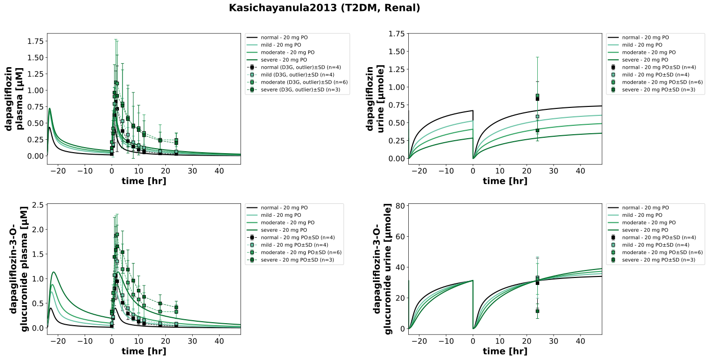
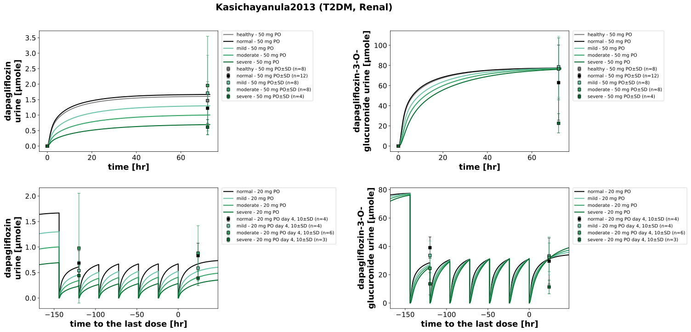

Overview
Models
| model | source |
|---|---|
| model | dapagliflozin_body_flat.xml |
Datasets
Figures (2)




Code
"""Simulation experiment of the study Kasichayanula2013."""
from typing import ClassVar, override
from pkpdsim.metadata import (
ApplicationForm,
Dosing,
Fasting,
Health,
PKPDMappingMetaData,
Route,
Tissue,
)
from sbmlsim import Q
from sbmlsim.data import DataSet
from sbmlsim.fit import FitData, FitMapping
from sbmlsim.plot import Axis, Figure
from sbmlsim.simulation import Change, Simulation
from sbmlsim.units import Quantity
from pkdb_models.models.dapagliflozin import MODEL
from pkdb_models.models.dapagliflozin.experiments.base_experiment import (
DapagliflozinSimulationExperiment,
)
class Kasichayanula2013(DapagliflozinSimulationExperiment):
"""Simulation experiment of Kasichayanula2013 (trial MB102007).
Healthy subjects and type 2 diabetes with normal renal function and with
mild, moderate and severe renal impairment (creatinine clearance by
Cockcroft-Gault). Day 1: a single tablet of 50 mg after an overnight fast,
urine 0-72 hr. Days 4-10: a subset of the diabetic patients (normal 4,
mild 4, moderate 6, severe 3) took 20 mg once daily (7 doses), plasma and
urine 0-24 hr on day 4 (first 20 mg dose) and day 10 (last dose). The
diabetic patients took their metformin, sulfonylurea or insulin 4 hr after
dapagliflozin; no interaction with dapagliflozin is expected
(Kasichayanula2011c), `Coadministration.NONE`.
The "dapagliflozin" panel of Fig1 (A) is a duplicate of the
dapagliflozin-3-O-glucuronide panel (B) (the plotted values of the normal
and mild groups are 0.93-1.03 times the glucuronide; the scaled curation
has AUC0-24 1.6-1.9 times the AUC of Table 4): its mappings are outliers.
"""
groups: ClassVar[list[str]] = [
"healthy",
"normal",
"mild",
"moderate",
"severe",
]
#: the groups of the multiple dosing (type 2 diabetes)
groups_multi: ClassVar[list[str]] = ["normal", "mild", "moderate", "severe"]
colors: ClassVar[dict[str, str]] = {
# the healthy subjects, the normal renal function of the T2DM groups is black
"healthy": "tab:gray",
"normal": DapagliflozinSimulationExperiment.renal_colors[
"Normal renal function"
],
"mild": DapagliflozinSimulationExperiment.renal_colors["Mild renal impairment"],
"moderate": DapagliflozinSimulationExperiment.renal_colors[
"Moderate renal impairment"
],
"severe": DapagliflozinSimulationExperiment.renal_colors[
"Severe renal impairment"
],
}
bodyweights: ClassVar[dict[str, float]] = {
"healthy": 77.9,
"normal": 97.2,
"mild": 73.9,
"moderate": 77.4,
"severe": 78.4,
} # [kg] (Table 1)
fpgs: ClassVar[dict[str, float]] = { # fasting plasma glucose
"healthy": 4.94,
"normal": 9.32,
"mild": 7.75,
"moderate": 6.79,
"severe": 7.23,
} # mM
#: creatinine clearance (Cockcroft-Gault, Table 1) [ml/min] relative to the
#: GFR of healthy kidneys (101 ml/min); the iohexol GFR of the subjects of
#: the multiple dosing (Fig2) is 122.7/64.8/50.9/19.6 ml/min on average
#: (normal/mild/moderate/severe), the creatinine clearance of the obese
#: normal group (97.2 kg) overestimates their GFR; the classification of
#: the study is used for both parts
renal_functions: ClassVar[dict[str, float]] = {
"healthy": 118.5 / DapagliflozinSimulationExperiment.gfr_healthy,
"normal": 133.2 / DapagliflozinSimulationExperiment.gfr_healthy,
"mild": 69.6 / DapagliflozinSimulationExperiment.gfr_healthy,
"moderate": 42.6 / DapagliflozinSimulationExperiment.gfr_healthy,
"severe": 24.3 / DapagliflozinSimulationExperiment.gfr_healthy,
}
#: the first 20 mg dose (day 4) is 72 hr after the 50 mg dose (day 1), the
#: last (day 10) 216 hr after it; the time of the multiple dosing is shifted
#: to the last dose
t_d4 = 72.0 # [hr]
t_d10 = 216.0 # [hr]
info: ClassVar[list[tuple[str, str]]] = [
("[Cve_dap]", "dapagliflozin"),
("Aurine_dap", "dapagliflozin_cumulative amount"),
("[Cve_d3g]", "dapagliflozin 3-o-glucuronide"),
("Aurine_d3g", "dapagliflozin 3-o-glucuronide_cumulative amount"),
]
urine_info: ClassVar[list[tuple[str, str]]] = [
("Aurine_dap", "dapagliflozin"),
("Aurine_d3g", "dapagliflozin 3-o-glucuronide"),
]
@override
def datasets(self) -> dict[str, DataSet]:
dsets = {}
for fig_id in ["Fig1", "Tab4A", "Tab2A"]:
df = self.load_dataframe(fig_id)
# the recovery in % of the dose duplicates the cumulative amounts
df = df[df["measurement_type"] != "recovery"].copy()
# digitized times such as 3.99999999999999 hr: sbmlsim cannot output
# two times which are equal after the last dose (day 10)
df["time"] = df["time"].round(12)
# the urine of the multiple dosing starts at a dose with the reset of
# the urinary amounts: a data point at the time of a change is
# compared with the state before it, i.e., the 0 at the start of day 4
# and day 10 with the amount of the day before
multi_urine = df["label"].str.contains("cumulative amount_DAP20_d")
df = df[~(multi_urine & (df["time"] == 0.0))].copy()
# the urine of day 4 in the time of the multiple dosing simulation
d4 = df["label"].str.contains("_DAP20_d4_")
df.loc[d4, "time"] = df.loc[d4, "time"] + self.t_d4 - self.t_d10
for label, df_label in df.groupby("label"):
label = str(label)
dset = DataSet.from_df(df_label, self.ureg)
# unit conversion to mole/l and mole; the urinary glucuronide is
# the recovery in % of the dose times the dose, i.e., mg of
# dapagliflozin equivalents
if label.startswith(
("dapagliflozin_", "dapagliflozin 3-o-glucuronide_cumulative")
):
dset.unit_conversion("mean", 1 / self.Mr.dap)
elif label.startswith("dapagliflozin 3-o-glucuronide"):
dset.unit_conversion("mean", 1 / self.Mr.d3g)
dsets[self.to_sid(label)] = dset
return dsets
def group_changes(self, group: str) -> dict[str, Quantity]:
"""Get the changes of the physiology of a group.
Args:
group: the group of subjects.
Returns:
The changes by parameter id.
"""
return {
"BW": Q(self.bodyweights[group], "kg"),
"[KI__fpg]": Q(self.fpgs[group], "mM"),
"KI__f_renal_function": Q(self.renal_functions[group], "dimensionless"),
"GU__fed": Q(self.fasting_map["fasted"], "dimensionless"),
"f_cirrhosis": Q(self.cirrhosis_map["Control"], "dimensionless"),
}
@override
def simulations(self) -> dict[str, Simulation]:
simulations = {}
for group in self.groups:
# single dose of 50 mg on day 1, urine 0-72 hr
simulations[self.to_sid(f"po_dap50_{group}_single")] = Simulation(
time_unit="hr",
end=73,
preinit_changes={
**self.default_changes(),
**self.group_changes(group),
"PODOSE_dap": Q(50, "mg"),
},
)
for group in self.groups_multi:
# 50 mg on day 1, 20 mg once daily on days 4-10, the urine of every
# 20 mg dose interval is collected separately
simulations[self.to_sid(f"po_dap20_{group}_multi")] = Simulation(
time_unit="hr",
end=self.t_d10 + 48,
preinit_changes={
**self.default_changes(),
**self.group_changes(group),
"PODOSE_dap": Q(50, "mg"),
},
changes=[
Change(
[self.t_d4 + 24 * k for k in range(7)],
{
"Aurine_dap": Q(0, "mmole"),
"Aurine_d3g": Q(0, "mmole"),
"Aurine_dapmet": Q(0, "mmole"),
},
),
self.add_doses(
[self.t_d4 + 24 * k for k in range(7)],
{"PODOSE_dap": Q(20, "mg")},
),
],
time_shift=-self.t_d10,
)
return simulations
@staticmethod
def health(group: str) -> Health:
"""Get the health status of a group.
Args:
group: the group of subjects.
Returns:
The health status.
"""
if group == "healthy":
return Health.HEALTHY
if group == "normal":
return Health.T2DM
return Health.T2DM_RENAL_IMPAIRMENT
@override
def fit_mappings(self) -> dict[str, FitMapping]:
mappings = {}
# day 10 (Fig1, Tab4): plasma and urine 0-24 hr after the last dose; the
# dapagliflozin plasma (Fig1A) is a duplicate of the glucuronide
for sid, prefix in self.info:
for group in self.groups_multi:
tissue = Tissue.URINE if "cumulative" in prefix else Tissue.PLASMA
mappings[self.to_sid(f"fm_dap20_d10_{group}_{sid}")] = FitMapping(
self,
reference=FitData(
self,
dataset=self.to_sid(f"{prefix}_DAP20_d10_{group}"),
xid="time",
yid="mean",
yid_sd="mean_sd",
count="count",
),
observable=FitData(
self,
task=self.to_sid(f"task_po_dap20_{group}_multi"),
xid="time",
yid=sid,
),
metadata=PKPDMappingMetaData(
tissue=tissue,
route=Route.PO,
application_form=ApplicationForm.TABLET,
dosing=Dosing.MULTIPLE,
health=self.health(group),
fasting=Fasting.FASTED,
),
)
# day 4 (Tab4): urine 0-24 hr after the first 20 mg dose
for sid, substance in self.urine_info:
for group in self.groups_multi:
mappings[self.to_sid(f"fm_dap20_d4_{group}_{substance}")] = FitMapping(
self,
reference=FitData(
self,
dataset=self.to_sid(
f"{substance}_cumulative amount_DAP20_d4_{group}"
),
xid="time",
yid="mean",
yid_sd="mean_sd",
count="count",
),
observable=FitData(
self,
task=self.to_sid(f"task_po_dap20_{group}_multi"),
xid="time",
yid=sid,
),
metadata=PKPDMappingMetaData(
tissue=Tissue.URINE,
route=Route.PO,
application_form=ApplicationForm.TABLET,
dosing=Dosing.MULTIPLE,
health=self.health(group),
fasting=Fasting.FASTED,
),
)
# day 1 (Tab2): urine 0-72 hr after 50 mg
for sid, substance in self.urine_info:
for group in self.groups:
mappings[self.to_sid(f"fm_dap50_{group}_{substance}")] = FitMapping(
self,
reference=FitData(
self,
dataset=self.to_sid(
f"{substance}_cumulative amount_DAP50_{group}"
),
xid="time",
yid="mean",
yid_sd="mean_sd",
count="count",
),
observable=FitData(
self,
task=self.to_sid(f"task_po_dap50_{group}_single"),
xid="time",
yid=sid,
),
metadata=PKPDMappingMetaData(
tissue=Tissue.URINE,
route=Route.PO,
application_form=ApplicationForm.TABLET,
dosing=Dosing.SINGLE,
health=self.health(group),
fasting=Fasting.FASTED,
),
)
return mappings
@override
def figures(self) -> dict[str, Figure]:
return {
**self.figure_fig1(),
**self.figure_tab2(),
}
def figure_fig1(self) -> dict[str, Figure]:
"""Plasma and urine after the last of the multiple doses (Fig1, Tab4)."""
fig = Figure(
experiment=self,
sid="Fig1",
num_rows=2,
num_cols=2,
name=f"{self.__class__.__name__} (T2DM, Renal)",
)
# the legend is outside of the panels, inside it covers the data
fig.settings = {**fig.settings, "legend_position": "outside"}
plots = fig.create_plots(
xaxis=Axis(self.label_time, unit=self.unit_time, min=-24, max=48),
legend=True,
)
plots[0].set_yaxis(self.label_dap_plasma, unit=self.unit_dap)
plots[1].set_yaxis(self.label_dap_urine, unit=self.unit_dap_urine)
plots[2].set_yaxis(self.label_d3g_plasma, unit=self.unit_d3g)
plots[3].set_yaxis(self.label_d3g_urine, unit=self.unit_d3g_urine)
for kp, (sid, prefix) in enumerate(self.info):
for group in self.groups_multi:
# simulation
plots[kp].add_data(
task=self.to_sid(f"task_po_dap20_{group}_multi"),
xid="time",
yid=sid,
label=f"{group} - 20 mg PO",
color=self.colors[group],
)
# data; the dapagliflozin plasma is the duplicated glucuronide
plots[kp].add_data(
dataset=self.to_sid(f"{prefix}_DAP20_d10_{group}"),
xid="time",
yid="mean",
yid_sd="mean_sd",
count="count",
label=(
f"{group} (D3G, outlier)"
if sid == "[Cve_dap]"
else f"{group} - 20 mg PO"
),
color=self.colors[group],
linestyle="" if sid in ["Aurine_dap", "Aurine_d3g"] else "--",
)
return self.figures_by_sid(fig)
def figure_tab2(self) -> dict[str, Figure]:
"""Urine after 50 mg (Tab2) and after 20 mg on day 4 and 10 (Tab4)."""
fig = Figure(
experiment=self,
sid="Tab2_4",
num_rows=2,
num_cols=2,
name=f"{self.__class__.__name__} (T2DM, Renal)",
)
# the legend is outside of the panels, inside it covers the data
fig.settings = {**fig.settings, "legend_position": "outside"}
plots = fig.create_plots(
xaxis=Axis(self.label_time, unit=self.unit_time), legend=True
)
plots[0].set_yaxis(self.label_dap_urine, unit=self.unit_dap_urine)
plots[1].set_yaxis(self.label_d3g_urine, unit=self.unit_d3g_urine)
plots[2].set_yaxis(self.label_dap_urine, unit=self.unit_dap_urine)
plots[3].set_yaxis(self.label_d3g_urine, unit=self.unit_d3g_urine)
for kp in [2, 3]:
plots[kp].set_xaxis(
f"{self.label_time} to the last dose",
unit=self.unit_time,
min=self.t_d4 - self.t_d10 - 24,
max=48,
)
for kp, (sid, substance) in enumerate(self.urine_info):
for group in self.groups:
# single dose
plots[kp].add_data(
task=self.to_sid(f"task_po_dap50_{group}_single"),
xid="time",
yid=sid,
label=f"{group} - 50 mg PO",
color=self.colors[group],
)
plots[kp].add_data(
dataset=self.to_sid(f"{substance}_cumulative amount_DAP50_{group}"),
xid="time",
yid="mean",
yid_sd="mean_sd",
count="count",
label=f"{group} - 50 mg PO",
color=self.colors[group],
linestyle="",
)
if group not in self.groups_multi:
continue
# multiple dose, day 4 and day 10
plots[kp + 2].add_data(
task=self.to_sid(f"task_po_dap20_{group}_multi"),
xid="time",
yid=sid,
label=f"{group} - 20 mg PO",
color=self.colors[group],
)
for day in ["d4", "d10"]:
plots[kp + 2].add_data(
dataset=self.to_sid(
f"{substance}_cumulative amount_DAP20_{day}_{group}"
),
xid="time",
yid="mean",
yid_sd="mean_sd",
count="count",
label=f"{group} - 20 mg PO day 4, 10" if day == "d4" else None,
color=self.colors[group],
linestyle="",
)
return self.figures_by_sid(fig)
if __name__ == "__main__":
MODEL.run_experiments(Kasichayanula2013, output_dir=Kasichayanula2013.__name__)